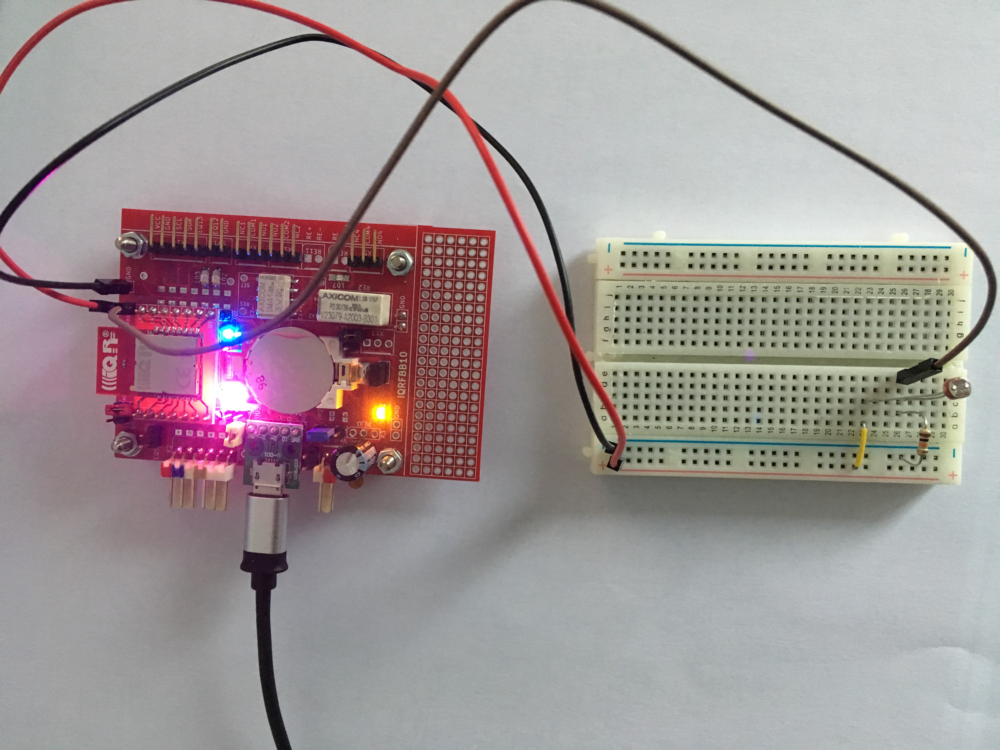

Standard Photorezistor Sensor

This example shows how to create "Standard Photorezistor Sensor" that will be immediately recognized and manageable from IOT world thanks to gateways and standardization.
Links
Prerequisities
- IQRFBB-10 bonded in working IQRF network. More in Getting Started
- IQRF Gateway Daemon working. More in IQRF Gateway Daemon
- Python 3.6 with WebSockets module. More in Python WebSockets example
Hardware wiring


Photorezistor is connected to GND, VCC and EQ14/C1/AN0. Since the board has LED5 on EQ14, this LED will be indicating a work of photorezistor.
Software in TR module
The example-standardPhotorezistor.c implements one binary input. Please load this "Custom DPA Handler" to TR module on board. Load Custom DPA Handler manual.
API JSON message
Since we implemented standard sensor we can use all standardized JSON messages for Sensor via JSON API of gateways.
Testing Python code
The example-standardPhotorezistor.py does following:
- Gets number of implemented standard sensors in TR module.
- Reads sensor in loop of 20 measurements
- Displays measured value from JSON message